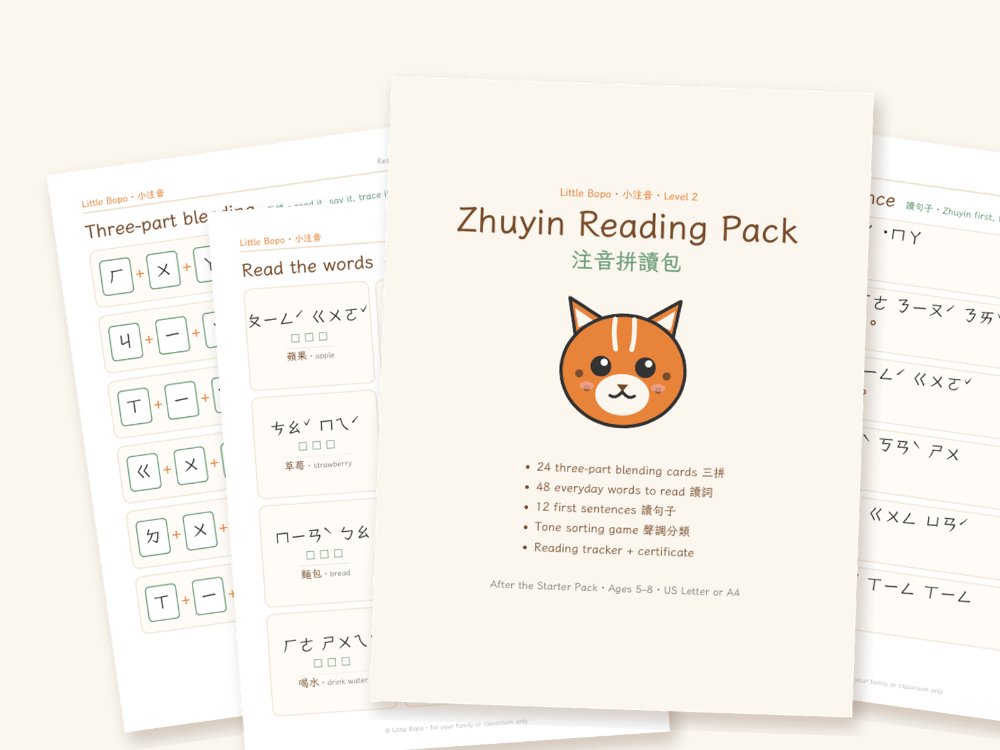

The Little Bopo Zhuyin path
Trace → read → blend → read stories. Each level builds on the last.

Level 1 · Zhuyin Starter Pack 注音入門完整包
Once your child can trace the symbols, it's time to read them. 18 printable pages:
- 37 symbol flashcards + tone-mark cards
- 25 blending cards: ㄅ + ㄚ = ㄅㄚ 八
- The four tones: 媽 麻 馬 罵 嗎
- Zhuyin Bingo (4 boards), a 37-day chart and a certificate
Instant PDF download · Print unlimited copies for your family

Level 2 · Zhuyin Reading Pack 注音拼讀包
From single sounds to real words and sentences. 16 printable pages:
- 24 three-part blending cards: ㄒ + ㄧ + ㄠ = ㄒㄧㄠ
- 48 everyday word cards with Zhuyin
- 12 first sentences to read aloud
- Tone sorting game, reading tracker and certificate
Instant PDF download · Print unlimited copies for your family
Best value
$24 separately · One payment, all future levels included
Complete Zhuyin System 注音完整課程
Starter Pack + Reading Pack + Lunar New Year Pack, plus Levels 3 and 4 free when they're released (Story Readers, First 100 Characters).
Get everything · $19